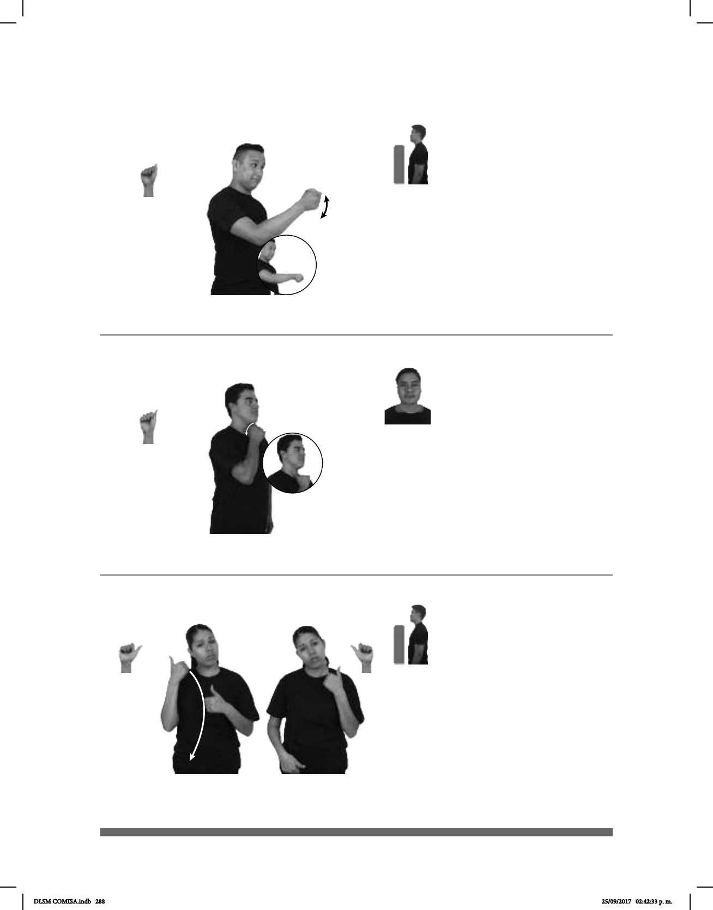

288
Seña: SM
A.5
Palma hacia la izquierda.
A la altura del pecho.
La mano se agita.
1. sust. m. Palabra,
expresión o gesto con el que se muestra
atención a una persona al encontrarse
con ella o que se hace llegar a alguien
con la misma intención. 2. v. tr. Dirigir
un saludo a alguien generalmente me-
diante fórmulas de cortesía al encontrar-
se o despedirse.
(A-166)
1
2
SALUDAR pos-TUYA ESPOSO+MUJER
Seña: SM
A.2
Palma hacia la izquierda.
Sobre el cuello.
La mano se mueve
formando un arco hacia abajo.
Punta de la
lengua hacia afuera.
1. sust. f. sing.
Necesidad o deseo intenso de tomar
líquido, especialmente agua. 2. adj.
Que sufre sed.
Seña: SB
MD y MB A.1
MD y MB palmas hacia
dentro.
MD y MB a la altura del pecho.
MD y MB recto hacia abajo
alternadamente.
Comisuras de los
labios hacia abajo.
v. tr. Alejar a una persona o una
cosa de otra cuyo contacto generalmente es
dañino, peligroso o inconveniente; poner o
ponerse fuera de contacto.
(A-167) Sed
1
2
(A-168)
PERRO
derecha
MUCHO SED
El perro tiene mucha sed.
pro-DOS-DE-NOSOTROS YA SEPARAR
Él y yo ya nos separamos.
DLSM COMISA.indb 288 25/09/2017 02:42:33 p. m.